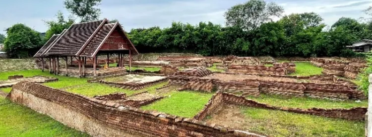

1วัดกู่ป้าด้อม Wat Ku Pa Dom
พุทธศตวรรษที่ 21–22 · 16th–17th century CE
ความเป็นมา Background
ชื่อวัดมาจาก “ป้าด้อม” เจ้าของที่ดินบริเวณโบราณสถาน ชาวบ้านบางครั้งเรียกว่า “วัดป้าต้อม”
Named after Pa Dom, the former owner of the land. Locals sometimes call it Wat Pa Tom.
การขุดแต่งและสิ่งที่พบ Excavation
พ.ศ. 2542–2543 พบวิหาร เจดีย์ แท่นบูชา กำแพงแก้ว ซุ้มโขง และอาคารที่สันนิษฐานว่าเป็นกุฏิสงฆ์
1999–2000: a viharn, a chedi, altars, an enclosure wall, an entrance arch and probable monks’ quarters.
จุดเด่น Highlight
ถูกฝังใต้ดินลึกราว 2 เมตร เชื่อว่าจากน้ำหลากครั้งใหญ่ และพบลายมกรคายมังกรที่สะท้อนอิทธิพลศิลปะจีน
Found buried about 2 m deep, probably by a great flood. A makara disgorging a dragon shows Chinese influence.